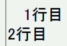

line-heightプロパティを%値で指定したときの基準はメニューの［View→Text Zoom→100%］が選ばれているときを基準にしているが、メニューから文字サイズを変更した後もこの基準が変化しない。
<p style="line-height:120%;">1行目<br>2行目</p>
1行目
2行目
メニューの［View→Text Zoom］から、150%や200%などの大きな値を選択してみてください。バグがある場合は、2行が重なるそうです。
Moz1.0での表示（標準モード、文字サイズ200%）
Moz1.0、N6.1、N6.2.3では標準・互換モードともに不具合の発生は確認されませんでした。
line-heightを%指定した場合、メニューのText Zoom: 100%を基準にするっぽい。
line-height: 150%でText Zoomを200%などとすると盛大に被る。